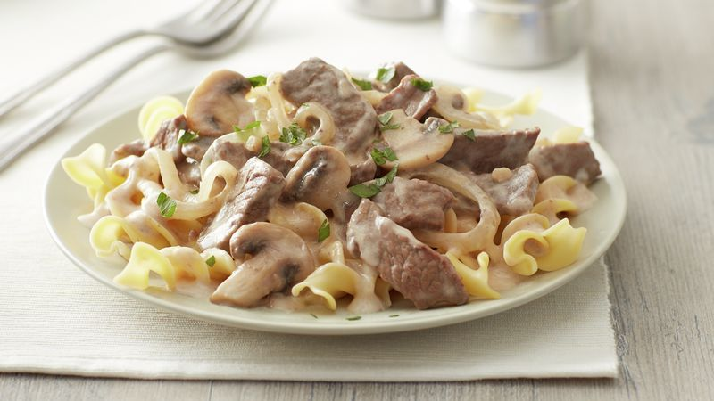

Beef Stroganoff

Description
Perfect pieces of tender beef in a thick and creamy sauce draped over a
layer of noodles makes for a perfect and simple dinner that's filling and
delicious. The recipe only calls for a small amount of your attention as it
simmers away after minimal prep work, and the resulting dish if a comforting
and succulent dish for any time of the year.
Ingredients
- 1 ½ lbs beef sirloin steak, 1/2 inch thick
- 8 oz fresh mushrooms, sliced
- 2 medium onions, thinly sliced
- 1 garlic clove, finely chopped
- ¼ cup butter
- 1 ½ cups beef flavored broth
- ½ teaspoon salt
- 1 teaspoon Worcestershire sauce
- ¼ cup all-purpose flour
- 1 ½ cups sour cream
- 3 cups hot cooked egg noodles
Directions
- Cut beef across grain into ~1½ x 1½ inch strips
- Cook mushrooms, onion, and garlic in butter in skillet over medium heat,
stirring occasionally, until onions are tender & remove from skillet
- Cook beef in same skillet until brown. Stir in 1 cup broth, salt,
and Worcestershire sauce. Head to boiling then reduce and simmer for 15
minutes.
- Stir remaining ½ cup broth into flour and add to beef mixture. Stir,
then add onion mixture and heat to boiling, stirring constantly. Stir in
sour cream and heat until hot. Server over layer of noodles.